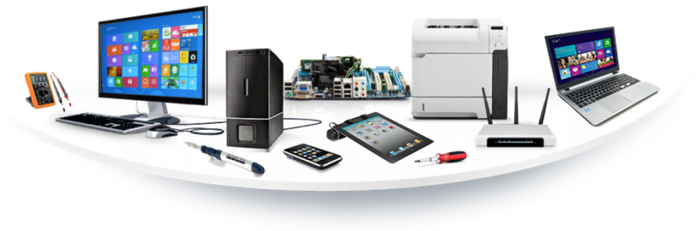

L'INFORMATIQUE ET SES DIFFERENTS OUTILS
Le mot "Informatique" a été créé vers 1960 à partir de deux mots "information" et "automatique". Elle est la science qui s'occupe du traitement automatique et rationnel de l'information par l'utilisation de machines communément appelée "Ordinateur".
En Informatique , lorqu'on parle d'outils , on fait référence spécifiquement aux divers éléments composant un système informatique.

Sur cette image nous voyons les différents outils de l'informatique que sont:
Souris
Clavier
Unité Central
Cependant nous avions aussi les logiciels qui servent d'outils à l'Informatique. Nous avons :
KEEPASS
Dropbox
WORD
EXCEL